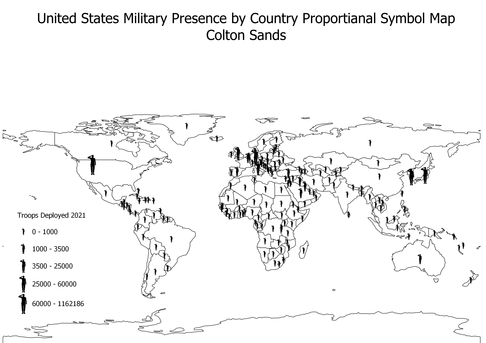

Homework 7:Proportional Symbol Map
Colton Sands
This map shows the amount of United States Military troops in each country of the world. I selected this topic because I felt it was very relevant giving current events. To create the symbols I created a centroid file based on the Natural Earth Countries Data Set and then added the image I created from a picture off the internet as a proportional symbol.

Data used for this project
Link to cleaned CSV dataset
Link to geoJSON
Source for CSV Data:Michael Flynn
Image Source